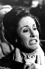

Country:United States, 78 minutes
Spoken languages:
Genres:Adventure, Sci-Fi
Director(s):Peter Bogdanovich
Writer(s):Henry Ney
Video Codec:Unknown
Number: 1514


Certification:
Storyline:
A groups of astronauts crash-land on Venus and find themselves on the wrong side of a group of Venusian women when they kill a monster that is worshipped by them.
Cast: 

Medium: Original DVD,
Comments: Part of: Sci-Fi Classics - 50 Movies
Loaned: No
Aspect ratio: Unknown